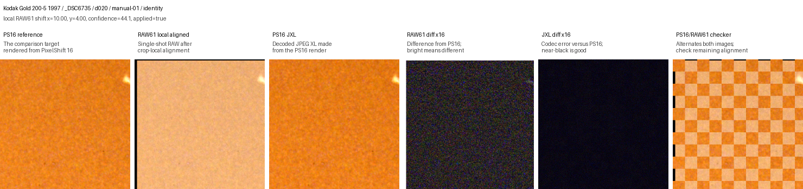
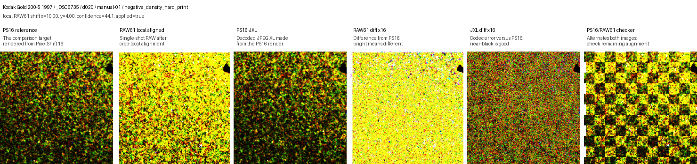
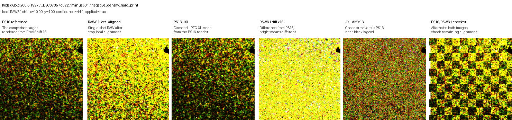
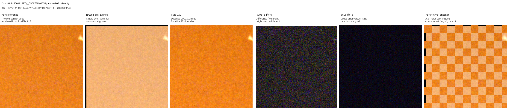
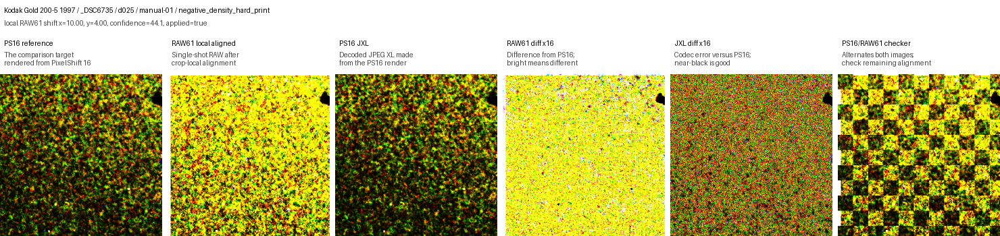
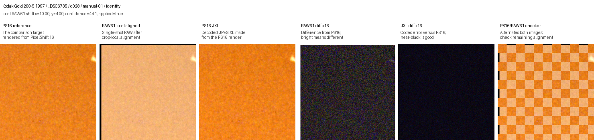
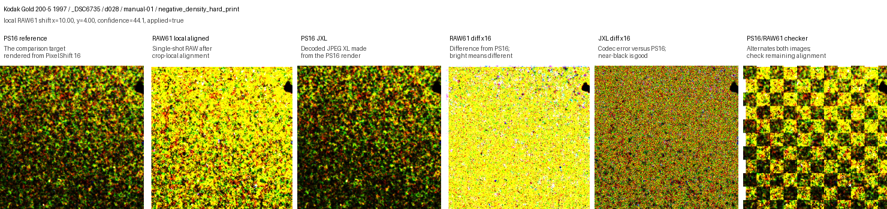
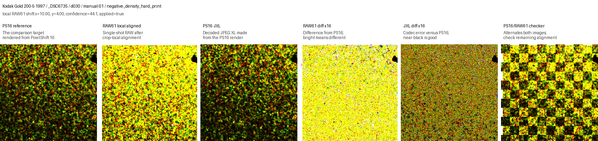

Candidate Rows
one material/frame/JXL-level comparison per row
Complete Rows
rows with size, color and structure data
PS16 JXL Wins
complete rows where current metrics favor PS16 JXL
Under-Budget Levels
levels whose median size is at or below RAW61
Current Reading
The current local data puts the storage break-even between d020 (114.1%) and d022 (98.6%).
The current numeric result should be read as provisional: the RAW61 baseline still includes render-profile, demosaic/acutance and registration effects, while PS16 JXL is measured against the PS16 render. That is intentional for the archive-value question, but it must be documented and visually reviewed.
What Are We Asking?
1. Codec question
PS16 reference vs PS16 JXL. This is apples-to-apples and measures JPEG XL damage to a fixed rendered image state.
2. Archive-value question
PS16 JXL vs RAW61. This is intentionally a workflow tradeoff: more sampling plus lossy coding versus less sampling plus raw preservation.
3. Break-even question
At what JXL distance does PS16 JXL stop carrying more useful film information than RAW61 at the same storage budget?
4. Operational question
Can the retained files remain decodable, documented, color-managed, and practical as archive masters or secondary masters?
Workflow Being Tested
Negative or positive original. The physical object is the real source, not any file.
Single-shot Bayer capture. Strong raw edit latitude, less spatial sampling.
PixelShift2DNG output. More spatial sampling, very large retained files.
RawTherapee neutral render. Used so comparisons measure declared outputs, not random app defaults.
Experimental branch. Useful but blocked for now by app support and DNG metadata/geometry concerns.
Main tested candidate now. Codec damage is measured against the PS16 render.
Safest archive branch. Expensive in storage; remains the conservative recommendation.
Size, color/tone, structure, visual review and operational risk are combined.
Level Summary
What this table is for: compare JPEG XL distance levels. RAW61 baselines are moved to the next table because they do not change when the JXL distance changes.
Important: the colors below are diagnostic labels, not FADGI conformance claims. FADGI-style target measurements are interpretation anchors because this project compares rendered film scans and compression candidates, not calibrated capture-target conformance.
Size
Answers whether the retained PS16 JXL candidate fits inside the paired RAW61 storage budget. Values over 100% are larger than RAW61.
JXL color p95
Patch-based ΔE00 after a hard negative-density stress transform. Around 0.16 is very small codec color movement in this diagnostic setup.
Color ratio
JXL color movement divided by RAW61-vs-PS16 color baseline. Below 1 means JXL is closer to PS16 than RAW61 is for this metric.
Structure ratio
High-pass detail loss divided by the RAW61 structure baseline. Below 1 means the PS16 JXL candidate remains structurally closer to PS16 than RAW61.
| JXL level | Status | Median size vs RAW61 | Median retained size | Size range | JXL color p95 | Color loss ratio | JXL structure | Structure ratio | Verdicts |
|---|---|---|---|---|---|---|---|---|---|
| d003 | Over RAW61 budget | 474.6% | 324.3 MiB RAW61 median 67.3 MiB |
254.8% - 511.6% 307.5 - 344.5 MiB |
0.06 very small codec color shift |
0.00x well below RAW61 baseline |
0.153 | 0.16x well below RAW61 baseline |
uncertain_over_budget: 9 |
| d005 | Over RAW61 budget | 361.0% | 247.4 MiB RAW61 median 67.3 MiB |
196.8% - 396.7% 231.9 - 267.1 MiB |
0.09 very small codec color shift |
0.00x well below RAW61 baseline |
0.156 | 0.16x well below RAW61 baseline |
uncertain_over_budget: 9 |
| d010 | Over RAW61 budget | 224.3% | 152.0 MiB RAW61 median 67.3 MiB |
126.1% - 250.4% 142.9 - 168.6 MiB |
0.11 very small codec color shift |
0.01x well below RAW61 baseline |
0.159 | 0.16x well below RAW61 baseline |
uncertain_over_budget: 9 |
| d020 | Budget edge | 114.1% | 79.8 MiB RAW61 median 67.3 MiB |
66.6% - 128.8% 70.6 - 90.8 MiB |
0.16 very small codec color shift |
0.01x well below RAW61 baseline |
0.163 | 0.17x well below RAW61 baseline |
ps16_jxl_likely_wins: 2, uncertain_over_budget: 7 |
| d022 | Budget edge | 98.6% | 69.6 MiB RAW61 median 67.3 MiB |
58.2% - 112.5% 61.2 - 82.0 MiB |
0.16 very small codec color shift |
0.02x well below RAW61 baseline |
0.162 | 0.17x well below RAW61 baseline |
ps16_jxl_likely_wins: 7, uncertain_over_budget: 2 |
| d025 | Under budget | 79.6% | 56.0 MiB RAW61 median 67.3 MiB |
47.8% - 92.1% 49.8 - 68.6 MiB |
0.15 very small codec color shift |
0.01x well below RAW61 baseline |
0.163 | 0.17x well below RAW61 baseline |
ps16_jxl_likely_wins: 9 |
| d028 | Under budget | 66.4% | 46.1 MiB RAW61 median 67.3 MiB |
40.0% - 77.5% 42.2 - 56.0 MiB |
0.16 very small codec color shift |
0.02x well below RAW61 baseline |
0.164 | 0.17x well below RAW61 baseline |
ps16_jxl_likely_wins: 9 |
| d030 | Under budget | 60.1% | 41.7 MiB RAW61 median 67.3 MiB |
36.2% - 70.4% 38.5 - 49.6 MiB |
0.17 very small codec color shift |
0.02x well below RAW61 baseline |
0.164 | 0.17x well below RAW61 baseline |
ps16_jxl_likely_wins: 9 |
| d050 | Under budget | 35.5% | 25.1 MiB RAW61 median 67.3 MiB |
21.2% - 40.7% 23.0 - 29.4 MiB |
0.21 very small codec color shift |
0.02x well below RAW61 baseline |
0.168 | 0.17x well below RAW61 baseline |
ps16_jxl_likely_wins: 9 |
| d075 | Under budget | 20.5% | 15.1 MiB RAW61 median 67.3 MiB |
12.3% - 23.7% 13.3 - 18.0 MiB |
0.32 small codec color shift |
0.03x well below RAW61 baseline |
0.172 | 0.18x well below RAW61 baseline |
ps16_jxl_likely_wins: 9 |
| d100 | Under budget | 15.7% | 11.7 MiB RAW61 median 67.3 MiB |
9.5% - 18.3% 10.1 - 14.6 MiB |
0.55 small codec color shift |
0.03x well below RAW61 baseline |
0.177 | 0.18x well below RAW61 baseline |
ps16_jxl_likely_wins: 9 |
| d150 | Under budget | 11.5% | 8.4 MiB RAW61 median 67.3 MiB |
6.8% - 13.4% 7.3 - 10.7 MiB |
1.08 visible if inspected |
0.03x well below RAW61 baseline |
0.184 | 0.19x well below RAW61 baseline |
ps16_jxl_likely_wins: 9 |
| d200 | Under budget | 9.3% | 6.8 MiB RAW61 median 67.3 MiB |
5.4% - 10.9% 5.9 - 8.5 MiB |
1.24 visible if inspected |
0.04x well below RAW61 baseline |
0.191 | 0.20x well below RAW61 baseline |
ps16_jxl_likely_wins: 9 |
RAW61 Baseline By Frame
What this table is for: show the apples-to-oranges part explicitly. RAW61 values are frame baselines: they are expected to repeat across JXL levels and should be reviewed for alignment, acutance, color profile and tone differences.
| Scan set | Frame | RAW61 color | RAW61 stress color | RAW61 structure | Worst JXL color | Worst JXL structure |
|---|---|---|---|---|---|---|
| Kodak Gold 200-5 1997 | _DSC6735 | 1.21 | 26.65 | 1.533 | 0.47 | 0.165 |
| Kodak Gold 200-5 1997 | _DSC6756 | 0.80 | 4.26 | 1.025 | 0.19 | 0.190 |
| Kodak Gold 200-5 1997 | _DSC6793 | 0.77 | 5.64 | 0.975 | 0.15 | 0.191 |
| Kodak Gold 200-5 1997 | _DSC6814 | 0.93 | 2.57 | 0.993 | 0.09 | 0.133 |
| Kodak5035 H190-1983 | _DSC6577 | 0.92 | 4.87 | 0.788 | 1.64 | 0.027 |
| Kodak5035 H190-1983 | _DSC6619 | 0.80 | 7.19 | 1.041 | 0.46 | 0.208 |
| Kodak5035 H190-1983 | _DSC6640 | 0.78 | 13.08 | 0.988 | 0.64 | 0.234 |
| Kodak5035 H190-1983 | _DSC6661 | 0.73 | 4.95 | 1.103 | 0.14 | 0.277 |
| Kodak5035 H190-1983 | _DSC6682 | 0.91 | 3.83 | 1.113 | 0.24 | 0.223 |
Render/Profile Audit
Current profile
profiles\rawtherapee\neutral-render.pp3
Render index contains 11 RAW61 rows and 11 PS16 rows.
Color management
Input profile: (camera)
Working profile: ProPhoto
Output profile: RTv4_Large
White balance warning
WB enabled: true
WB setting: Camera
Camera WB can differ between ARW and PixelShift2DNG metadata, so RAW61 may render less orange even with the same profile file.
Detail handling
RAW Bayer demosaic: amaze
Sharpening enabled: false
Apparent RAW61 sharpness can still come from demosaic/acutance, scaling and local alignment.
Full-frame Context
What this section is for: show where the published crop panels come from inside the larger rendered frame without publishing the full-resolution source images.
The yellow box marks the crop region used for visual review. These thumbnails are for orientation only; metric calculations use the underlying 16-bit rendered files and the listed crop coordinates.
kodak_gold_200_5_1997/_DSC6735 2 context image(s)


Visual Review Panels
The current local panel set is concentrated on one approved frame. Groups are collapsible so more films, crops and stress views can be added without making the report unreadable.
kodak_gold_200_5_1997/_DSC6735 10 panel(s)
{kind=link}

d020_manual-01_identity.png{kind=link}

d020_manual-01_negative_density_hard_print.png d022_manual-01_identity.png{kind=link}
{kind=link}

d022_manual-01_negative_density_hard_print.png{kind=link}

d025_manual-01_identity.png{kind=link}

d025_manual-01_negative_density_hard_print.png{kind=link}

d028_manual-01_identity.png{kind=link}

d028_manual-01_negative_density_hard_print.png d030_manual-01_identity.png{kind=link}
{kind=link}

d030_manual-01_negative_density_hard_print.pngColor Legend
Size cells
green at or below RAW61. yellow within 15% above RAW61. red clearly over budget.
ΔE00 cells
green below 1. yellow 1-2. orange 2-3. red above 3. These are diagnostic, not formal FADGI ratings.
Ratio cells
green below 0.5x RAW61 baseline. yellow below 0.8x. orange near parity. red worse than RAW61 baseline.
Diff panels
Bright diff pixels mean different from PS16. RAW61 diff includes sampling, scaling, alignment, acutance and render differences. JXL diff is mostly codec error.
FADGI Context
Useful established metrics include CIEDE2000 color accuracy, tone response, white balance error, color-channel misregistration, SFR/sampling efficiency, sharpening, and noise. The relevant lesson for this project is not that our film-crop rows can claim FADGI stars, but that a credible imaging study should separate color, tone, registration, detail, sharpening, and noise instead of relying on PSNR or a single diff image.
- Official FADGI 2023 guidelines describe the still-image conformance system and its target/software basis.
- FADGI/related practice commonly uses ΔE00 for color accuracy; strict published discussions cite average ΔE00 around 2 for highest-level color profiling, while older/practical references often discuss average 3 and maximum 6 as useful limits.
- NARA permanent-record rules expose related concrete thresholds: average color accuracy <3.5 ΔE00, 90th percentile <8.75, color-channel misregistration <0.5 px, sharpening max modulation <1.1, and noise upper limit <2 L* std dev for the listed record category.
Sources: FADGI Technical Guidelines page, FADGI Resources page, NARA 36 CFR 1236.50, and Heritage Science discussion of FADGI color tolerances.